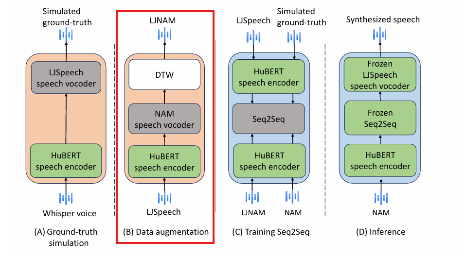
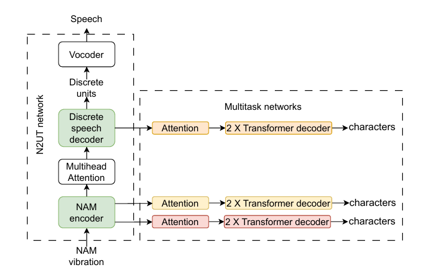

Existing Methods
Towards Improving NAM-to-Speech Synthesis Intelligibility using Self-Supervised Speech Models

Existing approaches for augmentation treat NAMs as devoid of any speaker information
Aligning NAMs & speech

Dynamic Time Warping (DTW) is a common approach to align NAMs and speech in time
NAM-to-Speech Conversion with Multitask-Enhanced Autoregressive Models

In this work, we extract HuBERT units from NAMs and train a vocoder to generate NAMs using HuBERT units.